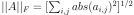

linalg.
norm
Matrix or vector norm.
This function is able to return one of eight different matrix norms, or one of an infinite number of vector norms (described below), depending on the value of the ord parameter.
ord
Input array. If axis is None, x must be 1-D or 2-D, unless ord is None. If both axis and ord are None, the 2-norm of x.ravel will be returned.
x.ravel
Order of the norm (see table under Notes). inf means numpy’s inf object. The default is None.
Notes
inf
If axis is an integer, it specifies the axis of x along which to compute the vector norms. If axis is a 2-tuple, it specifies the axes that hold 2-D matrices, and the matrix norms of these matrices are computed. If axis is None then either a vector norm (when x is 1-D) or a matrix norm (when x is 2-D) is returned. The default is None.
New in version 1.8.0.
If this is set to True, the axes which are normed over are left in the result as dimensions with size one. With this option the result will broadcast correctly against the original x.
New in version 1.10.0.
Norm of the matrix or vector(s).
See also
scipy.linalg.norm
Similar function in SciPy.
For values of ord < 1, the result is, strictly speaking, not a mathematical ‘norm’, but it may still be useful for various numerical purposes.
ord < 1
The following norms can be calculated:
norm for matrices
norm for vectors
None
Frobenius norm
2-norm
‘fro’
–
‘nuc’
nuclear norm
max(sum(abs(x), axis=1))
max(abs(x))
-inf
min(sum(abs(x), axis=1))
min(abs(x))
0
sum(x != 0)
1
max(sum(abs(x), axis=0))
as below
-1
min(sum(abs(x), axis=0))
2
2-norm (largest sing. value)
-2
smallest singular value
other
sum(abs(x)**ord)**(1./ord)
The Frobenius norm is given by [1]:

The nuclear norm is the sum of the singular values.
Both the Frobenius and nuclear norm orders are only defined for matrices and raise a ValueError when x.ndim != 2.
x.ndim != 2
References
G. H. Golub and C. F. Van Loan, Matrix Computations, Baltimore, MD, Johns Hopkins University Press, 1985, pg. 15
Examples
>>> from numpy import linalg as LA >>> a = np.arange(9) - 4 >>> a array([-4, -3, -2, ..., 2, 3, 4]) >>> b = a.reshape((3, 3)) >>> b array([[-4, -3, -2], [-1, 0, 1], [ 2, 3, 4]])
>>> LA.norm(a) 7.745966692414834 >>> LA.norm(b) 7.745966692414834 >>> LA.norm(b, 'fro') 7.745966692414834 >>> LA.norm(a, np.inf) 4.0 >>> LA.norm(b, np.inf) 9.0 >>> LA.norm(a, -np.inf) 0.0 >>> LA.norm(b, -np.inf) 2.0
>>> LA.norm(a, 1) 20.0 >>> LA.norm(b, 1) 7.0 >>> LA.norm(a, -1) -4.6566128774142013e-010 >>> LA.norm(b, -1) 6.0 >>> LA.norm(a, 2) 7.745966692414834 >>> LA.norm(b, 2) 7.3484692283495345
>>> LA.norm(a, -2) 0.0 >>> LA.norm(b, -2) 1.8570331885190563e-016 # may vary >>> LA.norm(a, 3) 5.8480354764257312 # may vary >>> LA.norm(a, -3) 0.0
Using the axis argument to compute vector norms:
>>> c = np.array([[ 1, 2, 3], ... [-1, 1, 4]]) >>> LA.norm(c, axis=0) array([ 1.41421356, 2.23606798, 5. ]) >>> LA.norm(c, axis=1) array([ 3.74165739, 4.24264069]) >>> LA.norm(c, ord=1, axis=1) array([ 6., 6.])
Using the axis argument to compute matrix norms:
>>> m = np.arange(8).reshape(2,2,2) >>> LA.norm(m, axis=(1,2)) array([ 3.74165739, 11.22497216]) >>> LA.norm(m[0, :, :]), LA.norm(m[1, :, :]) (3.7416573867739413, 11.224972160321824)